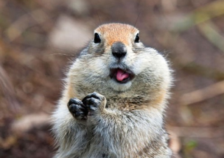

latest exhibition
“ The Gopher — Small Rodent, Great Consequences ” at Perot Museum in Dallas, TX.
What is a gopher ?
The Gopher is a small burrowing rodent native to North and Central America. They spend most of their lifetime digging their burrows and living in them.
What does a gopher look like ?
Usually, gophers are around 6 to 8 inches in body length. They have sharp, predominant teeth which allow them to dig without having dirt coming in their mouth, along with 5 claws that help them bore through gardens and farmlands.
Gophers also have big pouches on each cheek, which they use to store food and necessities, which is why they’re called “pocket gophers”. Their fur is commonly brown to grey-ish, that matches the color of the soil they live in.
Lifestyle of a gopher
Gophers essentially live underground and dig deep and sinuous tunnels that expand tremendously and can reach up to 2,000 square feet.
They spend most of their lifetime in their burrows, and they also store food and other materials they need to survive through colder seasons, as they don’t hibernate.
Gophers are herbivores and even though they can eat stems and leaves of plants they find nearby, they prefer roots and other things one can find underneath the ground. They may destroy crops, but also ventilate the ground and stuff it with nutrients that help crops grow.
Lifecycle of a gopher
-
Birth & early days
At birth, gophers are usually weak and blind and stick to their progenitor for around one month. Once that time has elapsed, newborn gophers are rejected from the burrow and have to survive on their own.
-
40 days later : end of the weaning period
Once out of their “burrow of birth”, gophers have to dig their own tunnels which can take up to 2,000 square feet, which is around the size of a common suburban house.
-
12 months later : sexual maturity
1 year after they are born, gophers reach their sexual maturity, which means they can now reproduce. But the amount of baby gophers one female gopher can have depends on the humidity of the soil the live in : in more arid areas, gophers may only have one litter, which is around 6 baby gophers.
-
End of life
Gophers have a rather short lifespan : they can live around 1 to 3 years, regardless of predators such as hawks, snakes and weasels or other fatal diseases they may come across throughout their lives. Some gopher species, however, can live up to 5 years.
Find out more facts about gophers, such as :
- How to lure them away;
- How to get rid of them;
- The most popular species;
along with a shooting range especially designed for gopher extermination at the Perot Museum in Dallas, Texas.
More info here